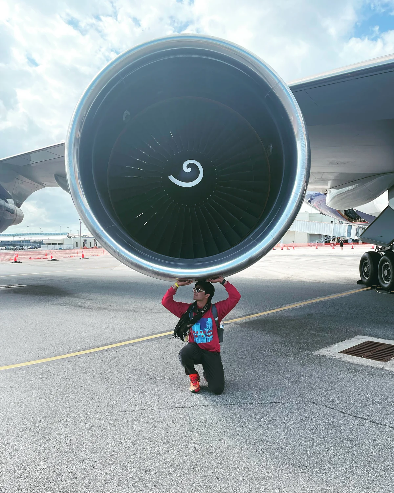

ENGINEER. CREATOR. ALWAYS CURIOUS.
Hi, I'm Haitish.
I work on things that fly.
Here, there's room for everything else too.

Professional
Aerospace, research, and the projects I've helped bring together.
Everyday
Stories, things I'm learning, and thoughts worth keeping. This is Haitish Puran.